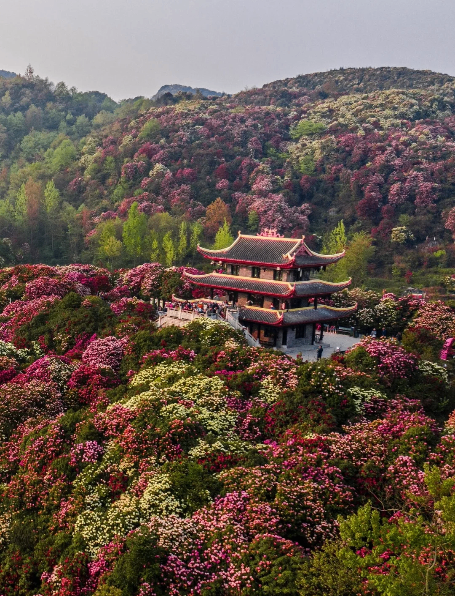
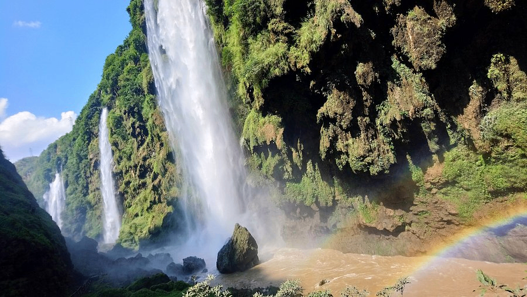
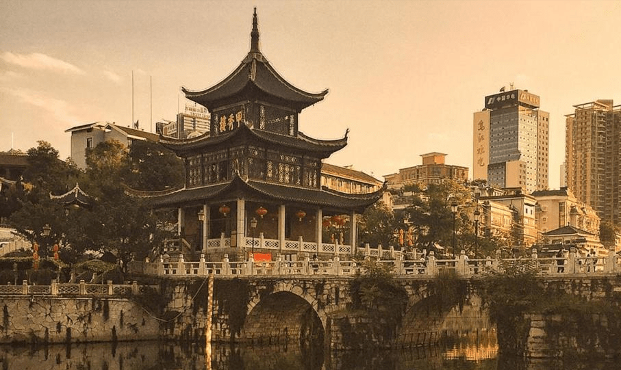
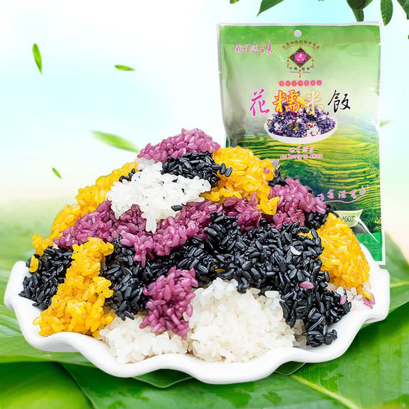
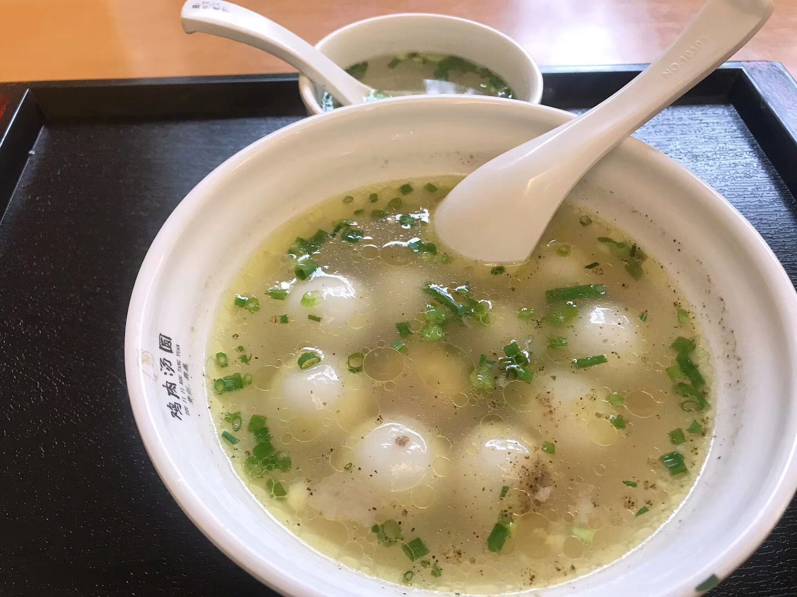
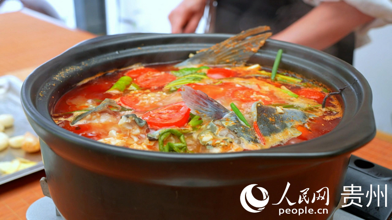
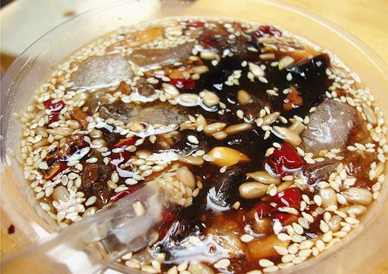
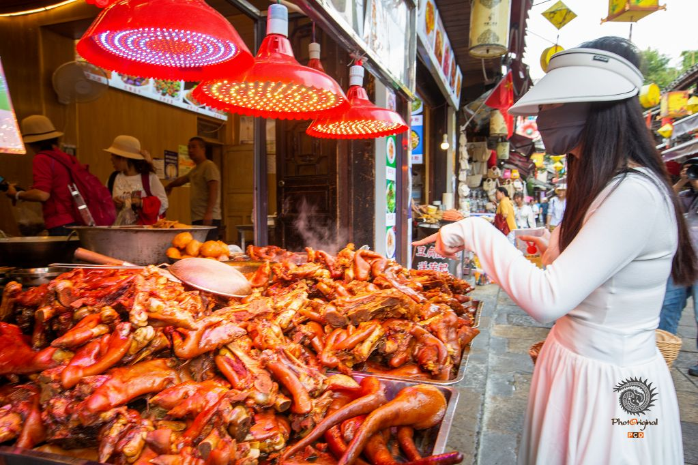
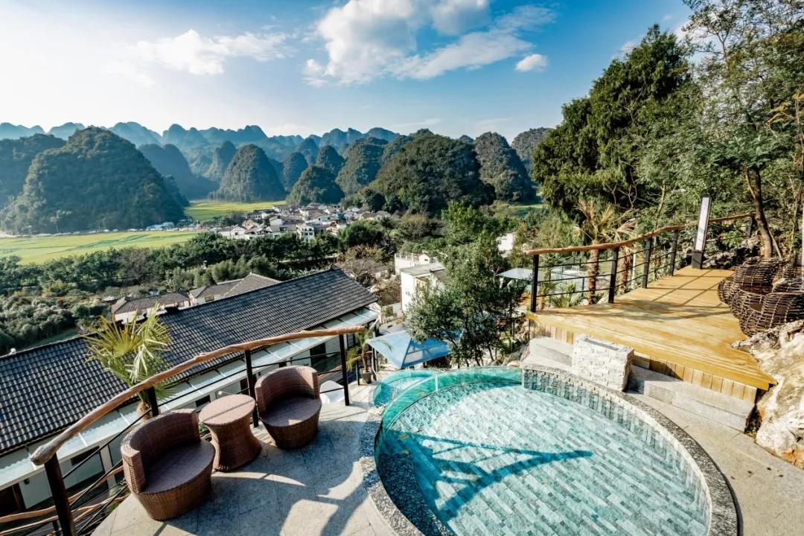
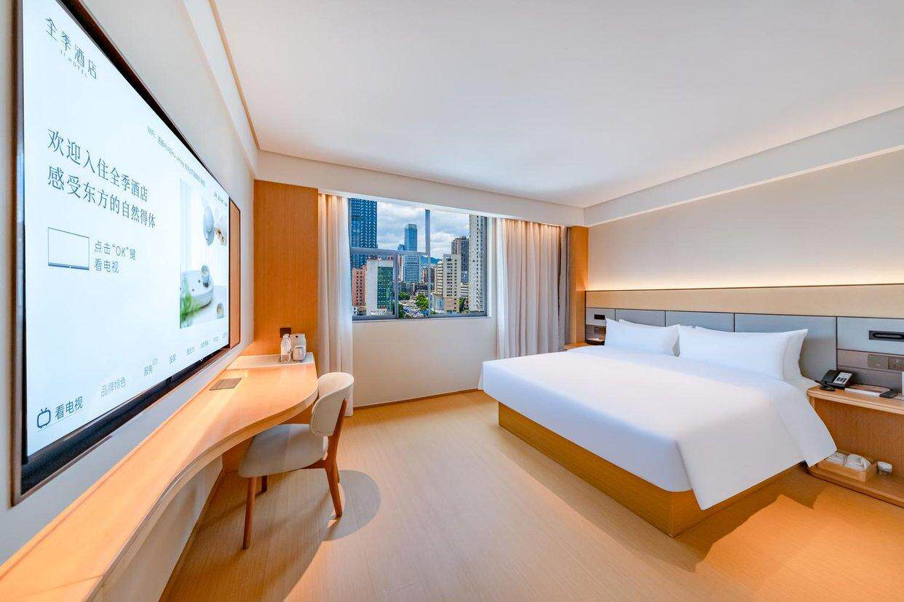

从百里杜鹃到万峰林，穿越花海与山川的甜蜜冒险
🚗 核心路线：贵阳 → 百里杜鹃 → 兴义 → 贵阳
奔赴花海・百里杜鹃盛花期
🌸 赏花杜鹃深度游・夜游峰林布依
🔥 打铁花万峰林・田园浪漫一整天
⛰️ 峰林地球最美伤疤・返程贵阳
🌊 峡谷贵阳慢生活・完美收官
🍜 美食清明假期餐饮、住宿可能上浮 20%-50%，以下为参考价格，建议提前预订
14:30｜贵阳出发前充满电（续航≥360km），走黔大高速S82前往百里杜鹃
17:00｜抵达普底景区西门，乘观光车游览核心景点：数花峰→醉九牛→五彩路
17:30-18:30｜牵手漫步花海，等一场杜鹃花田日落——光影洒在万亩花海上，绝美
19:00｜入住景区附近酒店，慢充满电，晚餐尝尝彝家烙锅+啤酒

8:00｜早起游览金坡景区（索玛花桥→百花坪→凝香台，花色最艳），日出后1小时光线绝佳
11:00｜景区午餐，快充20分钟补能后出发前往兴义（约3.5h）
15:30｜抵达兴义入住，短暂休整
18:00｜前往峰林布依景区，五色糯米饭+布依酸笋鱼当晚餐
19:00｜景区亮灯，「千与千寻」般的梦幻夜景
20:00｜🔥 非遗打铁花表演（1600℃铁水绽放漫天金雨，用连拍模式捕捉！）
20:40｜篝火晚会，牵手围跳，制造专属回忆
8:30｜出发前往万峰林，先尝一碗兴义贞丰糯米饭
9:00｜乘观光车游览万峰林核心景区：将军峰→八卦田→大顺峰→纳灰村（6个观景台俯瞰万亩峰林）
12:00｜纳灰村布依农家乐午餐（布依八大碗+柴火鸡）
14:00｜租情侣电动车骑行田间小道，穿越稻田，在稻田咖啡喝杯桂花拿铁，沉浸式拍照
17:00｜回到将军峰观景台，拍「日落峰林」大片——此刻光影是整个旅程的高光
18:30｜市区「乡愁集市」晚餐，酸笋牛肉火锅+烤小肠

8:30｜出发前往马岭河峡谷（约30分钟车程）
9:00｜游览「地球最美伤疤」省力路线：小青山入口→观光电梯下行→天星画廊→万马奔腾瀑布→珍珠瀑布（全程约3h，平路为主）
12:00｜峡谷餐厅午餐（峡谷野菜宴+土鸡汤，清爽解乏）
13:00｜快充20分钟补能，出发返回贵阳（约3.5h）
17:00｜抵达贵阳入住，南明河畔走走放松
19:00｜晚餐：贵阳特色丝娃娃或酸汤鱼，结束充实的一天
9:00｜自然醒，来碗贵阳肠旺面+卤蛋当早餐
10:00｜自由选择：黔灵山公园看猕猴（¥5）或贵州省博物馆（免费，需预约）
12:30｜午餐：老凯俚酸汤鱼（贵阳总店，开胃收官）
14:00｜逛逛喷水池商圈或青云市集，采购伴手礼
傍晚｜南明河畔散步，远眺甲秀楼亮灯夜景（⚠️ 翠微园4月10日前封闭施工，可外围观赏夜景，暂无法入内参观）

全程高速服务区+景区充电桩覆盖，无续航焦虑
百里杜鹃必吃，滋滋作响的烙锅+冰啤酒，花海边的深夜食堂

布依族传统美食，色彩斑斓寓意美好，情侣共享甜蜜

万峰林纳灰村农家乐招牌，柴火鸡+地道农家菜，人均50-60元

兴义特色，酸辣开胃，配上烤小肠，两个人的深夜狂欢

红油飘香，肠嫩旺滑，一碗面开启贵阳的一天

贵阳名片小吃，薄皮卷万物，蘸红酸汤一口一个
清明假期价格可能上浮 30%-50%，建议尽早预订。途家民宿同名搜索可比价。

📍 距普底景区西门2km，出行方便
⚡ 配备14个充电桩（1.88元/度），overnight慢充满电
💰 参考价 ¥300-500/晚（清明可能上浮）
💬 适合电车自驾，住一晚顺便充满电

📍 近鹏程公园，周边餐饮多
⚡ 充电车位充足
💰 参考价 ¥250-400/晚
💬 性价比之选，周边觅食方便
⭐ 携程 4.8分 · 2023年新开业
📍 万峰林景区内，出门即八卦田
🏠 有复式房型可选，180°落地窗直面峰林
💰 参考价 ¥200-350/晚（淡季有免费升级）
💬 住客评价：服务天花板、早餐好吃、免费接送
→ 携程预订
⭐ 携程 4.9分（超高评价）· 2021年开业
📍 万峰林风景区纳录村，离景区近
🏠 6间客房，大房间，有猫咪狗狗
💰 参考价 ¥200-300/晚
💬 住客评价：早餐"名不虚传"、老板超热情、自酿桑葚酒
→ 携程预订
⭐ 携程高分 · 2018年开业
📍 万峰林景区下纳灰村
🏠 布依族传统院落改建，美式田园+复古风
💰 参考价 ¥180-280/晚
💬 集酒吧、住宿、休闲、观景于一体，适合情侣氛围
→ 携程预订
⭐ 携程高分 · 2021年开业 · 17间客房
📍 南明河畔，步行可达甲秀楼（外围观赏夜景）
🏠 独栋三层，轻奢配置，TOTO洁具慕斯床垫
💰 参考价 ¥250-400/晚
💬 河景房落地窗直接美哭、早餐送到房间
→ 携程预订
⭐ 携程好评 · 8间精品客房
📍 瑞金南路，步行到青云市集3分钟
🏠 轻奢风格，闹中取静，有自助厨房
💰 参考价 ¥200-300/晚
💬 前台小姐姐是"贵阳万事通"，吃货首选位置
→ 携程预订
⭐ 携程高分 · 2025年新装修
📍 南明区，近甲秀楼和青云市集
🏠 新中式风格，位于建筑二三楼，有特色房型
💰 参考价 ¥200-300/晚
💬 适合喜欢中式文艺风的情侣
→ 携程预订
平均 15-22°C，早晚偏凉。贵州"天无三日晴"，多阵雨，出行必带雨具。紫外线不强但防晒仍建议。
雨伞/雨衣（必带！）、防滑鞋、薄外套、充电宝、一次性雨衣（峡谷用）、防晒霜、驱蚊液
最佳拍照时间：日出后1小时（8:00-9:00）和日落前1小时（17:30-18:30）。两景区间有免费直通车。花海蚊虫多，备驱蚊水。
万峰林日落+杜鹃花海日落是两个黄金时段。打铁花用连拍模式。古镇/田园穿温柔色系更出片。
春季温和多变，轻便外套+舒适步行鞋必备。花海穿白/浅色系拍照好看，日落时可换温柔色系。
清明出城高峰建议错峰（15:00后出发）。住宿清明涨价，早订便宜。峡谷栈道湿滑务必穿防滑鞋。充电APP提前注册别到了才装。